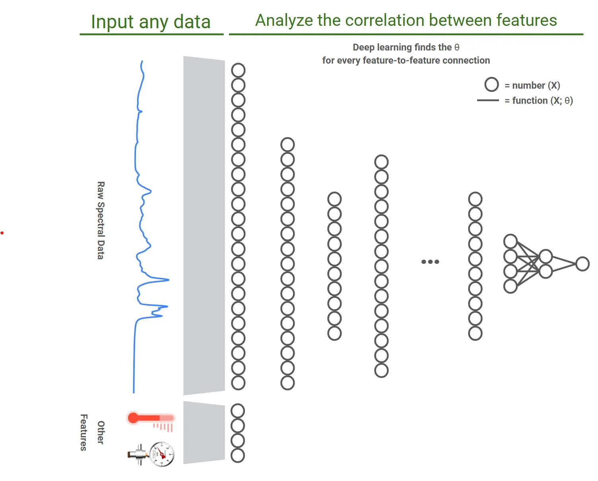

01OPERATE
rAI-GO
Real-time PAT Runtime
Raman·NIR 등 분광 장비 데이터를 Runtime 환경에서 수집·저장하고, 검토된 예측 모델의 실행과 운영 기록 관리를 지원합니다.
- Real-time acquisition
- Prediction & monitoring
- Traceable operation records
GMP-PAT DIGITAL VALIDATION PLATFORM
제약·바이오 GMP 제조환경을 위한 실시간 PAT 운영, 모델 수명주기 관리, Validation 문서화 및 Regulatory Readiness 지원 플랫폼.
IMPLEMENT. VALIDATE. OPERATE. DEFEND.

ONE PLATFORM STRUCTURE
장비 데이터, 분석 모델, 생산 Runtime과 운영 기록이 분리되면 Traceability와 Validation 부담이 커집니다. rAI는 각 단계의 역할과 근거가 연결되는 구조를 제공합니다.
Real-time PAT Runtime
Raman·NIR 등 분광 장비 데이터를 Runtime 환경에서 수집·저장하고, 검토된 예측 모델의 실행과 운영 기록 관리를 지원합니다.
Modeling & Model Lifecycle Platform
SIMCA 등 분석 엔진의 모델 Artifact를 Candidate 등록, 독립 검토, 승인 버전과 배포 근거로 연결하는 Lifecycle Governance를 지원합니다.
Enterprise Monitoring Platform
복수의 rAI-GO 환경에서 생성되는 주요 운영 상태와 모델 정보를 중앙에서 검토할 수 있도록 지원합니다.
실제 연동 범위는 장비, 인터페이스, 에디션 및 프로젝트 구성에 따라 확정됩니다.
ACTUAL PRODUCT INTERFACES
기존 홈페이지에 공개된 실제 제품 화면을 바탕으로 Runtime 운영과 Model Lifecycle의 연결 방식을 보여드립니다. 핵심 기능은 빠르게 찾고, 중요한 근거는 검토 가능한 구조로 남깁니다.
Real-time PAT Runtime
실시간 스펙트럼과 예측값, 장비 상태 및 실행 기록을 한 화면에서 확인하고 운영 판단에 필요한 정보를 추적합니다.

Modeling & Model Lifecycle
모델 계산은 SIMCA 등 프로젝트에서 승인된 분석 엔진에서 수행하고, rAI-Q는 Candidate 등록부터 독립 검토, 승인 버전 및 배포 근거까지 Lifecycle 정보를 구조화하도록 지원합니다.


제공된 대표 화면을 통해 데이터 검토, 모델 개발 관련 근거 및 결과 검토의 연결 예시를 보여줍니다.


이 영역은 제공 자료의 개념·비교 예시이며, 현재 상용 기능 범위는 에디션·분석 엔진·프로젝트 계약에 따라 확정됩니다.



화면 이미지는 제공된 대표·참고 자료입니다. 실제 제공 기능, 명칭, 모델 계산 엔진, 승인 Workflow 및 화면 구성은 제품 버전·에디션·라이선스·프로젝트 범위에 따라 확정됩니다.
PART 11 COMPLIANCE MODULE
FDA 21 CFR Part 11 및 EU GMP Annex 11 요구사항을 고려하여 전자기록, 전자서명, Audit Trail, 사용자 권한관리, 승인 Workflow 및 변경이력 관리를 지원합니다.
검토 가능한 전자기록 관리
프로젝트 범위에 따른 전자서명 Workflow 지원
주요 이벤트의 추적 가능한 기록
역할 기반 권한관리와 직무분리 원칙 지원
검토·승인 단계 및 변경이력 관리
위험기반 CSV와 검증 산출물 구성 지원
VALIDATION & LIFECYCLE SERVICES
도입 범위와 규제 요구 수준에 맞춰 Documentation부터 GMP-PAT Validation, Full Implementation까지 단계적으로 구성합니다.
Documentation
계획·요구사항·위험평가·시험·추적성·요약보고서로 이어지는 문서 체계를 구성합니다.
Define scopeValidation
시스템과 분석 모델의 intended use에 맞춘 Validation 범위와 실행 근거 구성을 지원합니다.
Define scopeImplementation
구현·연동·Validation·교육·운영 준비를 하나의 단계형 도입 계획으로 연결합니다.
Define scope승인된 SOW와 프로젝트 계획에 정의된 구현, 구성, 문서 및 시험 지원 범위에 적용됩니다.
고객 인프라 승인, SOP 제정·승인, PQ, 최종 Validation Acceptance 및 제조·품질 의사결정은 고객 책임입니다.
최초 도입 후 1년간 기본 유지보수를 포함하며, 2년차부터 별도 연간 유지보수 계약으로 운영합니다.
관련 GMP 및 전자기록 요구사항을 고려한 기능과 Validation 지원 구조를 제공합니다. 최종 적합성은 고객의 intended use, 승인 절차 및 QMS에 따라 확정됩니다.
ABOUT rAI-SW
rAI-SW는 PAT 데이터를 통제된 제조 운영과 Model Lifecycle, Validation Evidence 및 Audit Readiness로 연결하는 제약·바이오 전문 플랫폼 기업입니다.
BUSINESS INQUIRY
현재 장비 환경, 모델 운영 방식, Validation 범위와 도입 일정을 함께 검토합니다.
Open Business Inquiry Paid PoC Pilot 및 구축 범위는 별도 협의를 통해 확정됩니다.